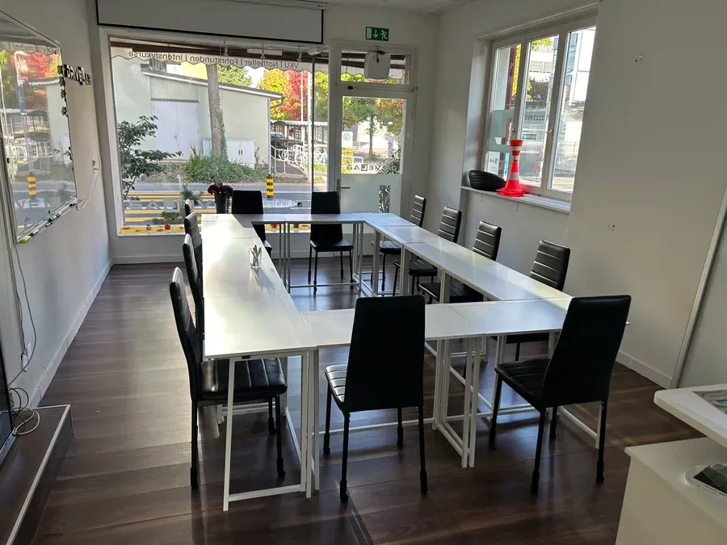

Verkehrskunde · Kanton Zug · obligatorisch
Zwei Abende.
Dann bist du durch.
18:00 – 22:00 Uhr · 2 × 4 Stunden · Industriestrasse 50, 6300 Zug


- Preis
- CHF 230all inclusive
- Dauer
- 8 Std.2 Abende à 4 Std.
- Vom Bahnhof
- 9 Minzu Fuss
- Storno
- 48 Std.kostenlos
Was an welchem Abend passiert.
Vier Module, zwei Abende. Tippe auf einen Block, um zu sehen, was drin ist.
Blickführung, Sichtweiten und tote Winkel. Danach erkennst du Gefahren, bevor es eng wird.
Strasse, Wetter, Tageszeit und die anderen. Danach liest du die Lage als Ganzes.
Geschwindigkeit, Abstand, Bremsweg. Danach schätzt du Abstände, statt zu raten.
Vorausschauend entscheiden und Reserven behalten. Danach bleibst du auch im Gedränge ruhig.
Der Raum, in dem es stattfindet.
Keine Bildagentur. Das ist die Industriestrasse 50.